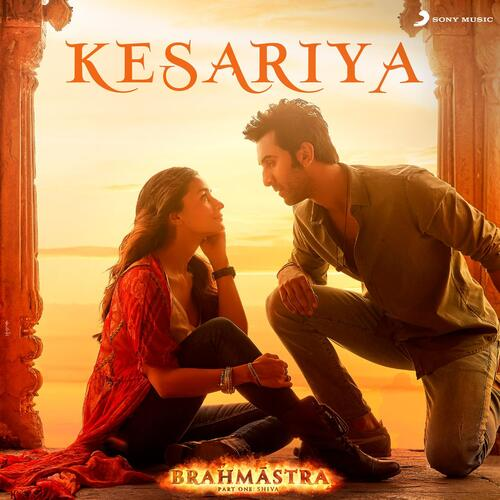
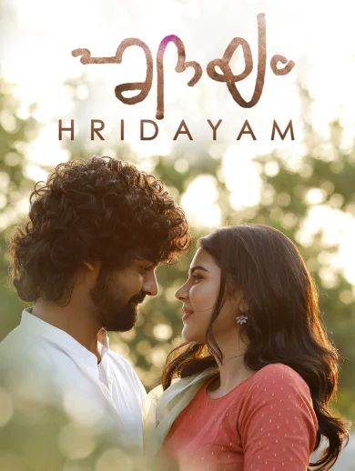
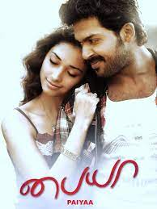

<h1>Some of the Best Songs of My Choice</h1>
<hr/>

    <a href="https://www.youtube.com/watch?v=cqwc0_C_Yt0&list=RDGMEMCMFH2exzjBeE_zAHHJOdxg&start_radio=1&rv=oMeW3UOXwKc" draggable="True"><b>Tharagathi Gadhi</b></a>
    <a  
    <a href="https://www.youtube.com/watch?v=6mr4cYJ7yew&list=RDGMEMCMFH2exzjBeE_zAHHJOdxg&index=9" draggable="True"><b>Kesariya</b></a>
    
    <!-- <p> This melodious song is from the movie Colour Photo,which mesmorises us with its magical tune/bgm.
    </p> -->
<!-- <hr/> -->
    <!-- <p> This song is from the movie Brahmastra,which resembles the symbol of love.
    </p> -->
<!-- <hr/> -->
    <a href="https://www.youtube.com/watch?v=faLdQRF2DQk&list=RDGMEMCMFH2exzjBeE_zAHHJOdxg&index=15" draggable="True"><h2>Nagumo Revival</h2></a>
    
    <!-- <p>This song is from the movie Hridayam, which describes a person's journey in short with mesmorising music.
    <br/>It may be short but its impact in our hearts will be forever.
    </p> -->
<!-- <hr/> -->
    <a href="https://www.youtube.com/watch?v=epAFDEJImrU&list=RDGMEMCMFH2exzjBeE_zAHHJOdxg&index=18" draggable="True"><h2>Darshana</h2></a>
    
    <p> -->
        Once again this song is from the movie Hridayam ,which makes us fall in love with music.
     </p> 
    <!-- <hr/>
    <a href="https://www.youtube.com/watch?v=oMeW3UOXwKc" draggable="True"><h2>Chuttesai Chuttesai Bhoomi</h2></a>
    
    <p>
          This is my personal most favourite and it is from movie Aawara,
    <br/> way of expressing love and the female singer's vocals will never make us bored.
    </p>
<hr/>